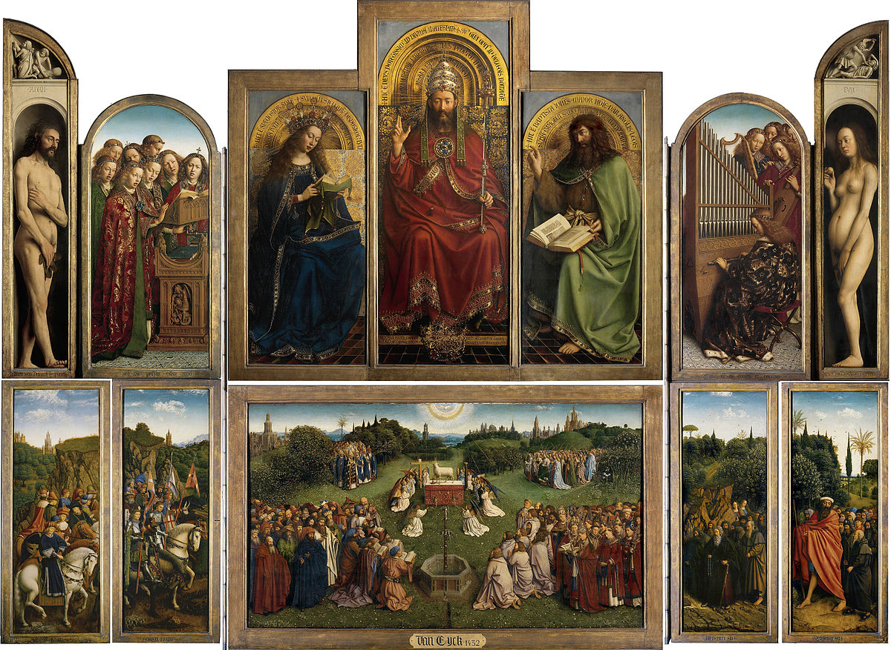

杨·凡·艾克 Jan Van Eyck – 根特祭坛画 Ghent Altarpiece
文章目录
 图1. 重大宗教节日时艳丽的祭坛画，461cm * 350cm
杨·凡·艾克（1380~1390）-1441，生活在尼德兰地区（逝去的历史，出生地于现今荷兰），弗兰德斯画派；低调的北方画家，主要画作是两类作品：宗教画、肖像画。
关于宗教画，凡·艾克兄弟（杨哥哥的哥哥胡贝特Hubert也是当地小有名气的画家，有些画就标识为凡·艾克兄弟）受捐助人之邀创作的宗教画较多，风格还是很有辨识度，最具代表性的是1415年至1432年期间绘制完成的根特祭坛画（图1）。
关于肖像画，在中世纪末期的流行，与贵族、民众从黑死病的阴霾走出来有关。 黑暗的散去，不是靠上帝的信仰解决的，而是人类自己。生，不能只为信仰；信仰，是为了明亮的活出自我。
摘一段《剑桥艺术史》中的阐述：
14世纪末，从巴黎和勃艮第的法国宫廷传来新的动向，人们对生活焕发出新的热情，对外部事物、穿戴衣着和娱乐中的美产生新的热爱，这些都突然地反映在手抄本的封面和插画中，就像一部无声影片，向我们展示浮华灿烂的宫廷世界。
贵族们从思想上接受了艺术不仅属于上帝属于宗教，也能接纳自然和自己；在凡·艾克改进创新油画方法后，让艺术接近了现实，贵族们的“音容笑貌”便记录到一幅幅的相框里。
其实杨哥哥的作品数量不算多，与他作画太过细致有关，精雕细琢出精品。套用现在的表达，每一幅作品都凝结着崇高的匠心。杨哥哥最被业内业外所一致认为的代表作是根特祭坛画、阿诺菲尼夫妇，下文分别从这两幅作品展开，去领略杨哥哥的超群技艺！
宗教画
1、根特祭坛画，被盗最多的画
看到这个小标题，不要惊讶，被盗最多的根因是这个祭坛画的组合太多了，有20幅木板画组成，每块木板约146.2cm * 51.4cm，都可以单独拆卸，艺术大盗小贼最爱呀！
第一位下手的盗士是艺术狂魔拿破仑，滑铁卢战败后又1815年画作回归根特； 接着，普鲁士国王“重金”1.6万刀购买； 一战期间，德国带走了几幅木板； 1920年凡尔赛条约中这些木板画作为赔偿归还比利时。 艾玛，终于合体了。 不过不幸的是十年后1934年又被盗两幅，施洗约翰Saint John the Baptist和正义法官The Just Judges（亚当下面的那幅），前者失而复得，后者依然杳无音讯。 失踪的说法有好多，最神秘的是The Just Judges画中隐藏着通往圣杯的秘密地图。现在完整画作中The Just Judges是1945年修复的。
欣赏完祭坛画在节日时分打开时的样貌（图1），再看一下非重大宗教节日时，平常静肃的教堂里祭坛画是合上的（图2）。
 图2. 大多时日的根特祭坛
图2. 大多时日的根特祭坛
根特祭坛画表达的宗教故事太多了，由于现在我对宗教理解太浅薄，就不拾人牙慧胡乱解释，附上对祭坛画详细解读的链接（戳这儿），感兴趣可以细看（如果看不到，那就是因为有墙）。
其中故事感最强的是神秘羔羊的崇拜The Ghent Altarpiece（图3），羔羊在基督教中寓意是基督，正在往圣杯中倒入鲜血，暗示的是基督的牺牲。 这幅画先不提人物众多，就连在圣坛下的花儿都有十种之多， 有缬草、三色紫罗兰、蒲公英、野草莓和铃兰等等。
 图3. 神秘羔羊的崇拜
图3. 神秘羔羊的崇拜
 图4. 贝里公爵时祷书之五月
图4. 贝里公爵时祷书之五月
 图5. 凡·艾克兄弟与林堡兄弟作品细节对比
图5. 凡·艾克兄弟与林堡兄弟作品细节对比
2、融入现实景观，罗林大臣的圣母
在15世纪前的西欧宗教画，大多以平面或挂毯作为背景，让宗教人物更显肃穆，与信徒有不可逾越的距离。 杨哥哥做了突破，融入真真切切在自然中的山川河流，在城市里的建筑，不仅将画的空间延长，也拉近了人与上帝的界限。
The Madonna with Chancellor Rolin，1435年作品，整幅画（图6）只有66cm * 62cm，但却包含了前景、中景、背景。 远处隐隐约约在山峦，淡淡蓝白的天空，蜿蜒平静的河流，一定是杨哥哥游历四方的风景；甚至河边的乌得勒支大教堂，教堂的速写现在收藏于卢浮宫； 中景是廊外的街道或塔楼，过往行人也是景； 画面前方是圣母圣子和捐助人，手捧王冠的天使，几何的地板与廊壁上的玻璃空格呼应，营造出真实的空间感。
虽然后世不乏更高明的技巧，更温馨的画面，but，杨哥哥已经在突破太多当时的桎梏，深深折服！
 图6. 探索空间透视法
图6. 探索空间透视法
 图7. 15世纪与21世纪的乌得勒支大教堂
图7. 15世纪与21世纪的乌得勒支大教堂
3、同时期大师们，都在突破
漫长中世纪将绘画完全程式画，天使的模样、圣母的衣饰、圣经故事的构图等等，这些在宗教画的画师们脑中，有着根深蒂固的模式，“千篇一律”地画着同主题的圣经故事。 人类历史上很玄妙，当整体文明爆发时，不同民族都同时孕育自己的大师。如春秋时期的“中国”，文艺复兴时期的“欧洲”。
北方尼德兰的杨哥哥用油画技巧耐心地勾勒天使和圣母的华丽着装，细看衣物，能有种可触摸的绒面质感；南方佛罗伦萨的Fra Angelico安吉利科，更专注用透视法营造天使与圣母的空间感，朴素的蛋彩转化为温柔的色彩。两位都是大师大师。 本来是想只放上局部对比图，但是真的会有负大师们，放上大图大图。
下面是圣经故事常刻画的主题The Annunciation天使报喜，天使告知圣母，她将以处女之身受孕，生下耶稣。
杨哥哥的作品画幅较小（图8），只有92.7cm * 36.7cm，木板油画（也许它是某个大作品中的一部分）。1436年完工后放置在卡尔特派修道院，1918年被“运到”巴黎，目前收藏在华盛顿国家艺术馆。 不同于传统天使报喜的地方，杨哥哥将故事地点置于一个教堂中，而不是玛利亚家中；教堂融入罗马风格的立柱，哥特风格的彩绘玻璃窗；教堂地板上都被填充不同的圣经事故。 满满的匠心！
 图8. 两种建筑风格的教堂背景
图8. 两种建筑风格的教堂背景
 图9. 我想有这样的天使翅膀
图9. 我想有这样的天使翅膀
 图10. 中世纪传统的天使报喜（被我标记了创作时间）
图10. 中世纪传统的天使报喜（被我标记了创作时间）
4、蛋彩画的蛋，油画的油
杨哥哥的创新源于蛋彩画的bug，用蛋调和颜料，干得太快，从蛋胶画法演进到油画，为精雕细琢延长了时间。 作为非专业学员，我还是查了下在几类重要绘画形式的差异和演变历程。
4.1、蛋彩画
Tempera，最早在埃及墓室壁画中就有应用，后传入罗马，是14世纪至16世纪在欧洲盛行的绘画方式。 蛋彩的配方复杂，而且多样。典型配方是: 将蛋黄加入手磨的天然颜料粉中，复杂点的也会加入如亚麻仁油、清水、薄荷油、酒精、醋汁等，甚至还有加入蜂蜜、酪奶（听上去好好吃）。 蛋彩调制的颜色比较清亮，由于绘制过程中干得较快，颜料干透后颜色比刚上色时颜色深。作画时常会分层描画，打底色彩最淡，再层层深入。如果底色先上深色，干透后会显得更深，再涂浅色画面会显脏，整幅画将Say Byebye。 熟知颜料品性的高手作品的画面层次丰富，色彩和谐，色泽明亮，比如安吉利科的天使报喜。
通常蛋彩画的制作过程是： 在干燥的木板上刷上石膏，石膏干后反复打磨抛光，光滑后应用蛋彩作画。如果想画大画幅，没有那那么大的木板，怎办，那就用若干小木板拼接，类似根特祭坛画；或者，干脆画到大大的墙壁或天花板上吧，这就形成了湿壁画。
4.2、湿壁画
Fresco，最早是13世纪意大利兴起，终结算是在16世纪油画全面胜出的时候。 颜料配方仍然是蛋彩，只是将绘画的制作过程改良了： 先在墙上涂一层粗灰泥，再涂上一层细灰泥，然后将草图描上去，再涂第三层更细的灰泥，这就形成壁画的表层。然后将颜料画在湿湿的灰泥上，done！ 因为是画在湿的灰泥上，灰泥干了以后色彩会变淡，所以着色时可以下手重点。
湿壁画的优点就是保存久，画都深入墙身“血肉”了，只要墙不倒，都不会退色。不足也是会比较快就干了（比传统蛋彩画要干得慢），画疵了要修改画？抠掉墙壁再涂？毁了too。 湿壁画其实在文艺复兴时期市场占有率极高，性价比比油画高，再加上有大师打Call，最最鼎盛作品就是米开朗基罗为西斯廷教堂画的天顶画《创世纪》。 因为存在追求画作品质胜过性价比的北方贵族及北方画家，油画应运而生。
4.3、油画
Oil，最早就是15世纪初，杨哥哥实验并应用的，北方文艺复兴时期风靡，最终被各路大师们改良应用，直到成为当今西方乃至全球绘画形式的No.1。 油画将蛋彩画改良，用**亚麻子油（或核桃油等）**而不是胶溶性的蛋白或蛋黄调和颜料，初期主要作画在木板上，后期发明了油画布，写生携带更方便，目前也主要是布面油画。 油画颜料干得非常慢，变干后色彩基本保持原样，多种颜色调和画面也不会变脏；因为油画是不透明的，浅色可以覆盖到深色颜料上，所以一般作画是先画深色再到浅色，逐层覆盖；画错了也方便修改。
总之，油画千般好，遂得画家心！数史上最著名油画作品，没有争议，就是莱奥纳多的那幅神秘or诡异微笑的姐姐《蒙娜丽莎》。
居然又啰嗦这么久，继续正题！
5、宗教画中天使的华丽翅膀
因为非专业人士，有时欣赏画作思想会飘，思维跳跃比较大。 那在欣赏杨哥哥的宗教画时，瞄到了好多美丽的天使翅膀，彩色的羽毛，饱满的羽翼。（图11）
如果天使们展开翅膀，定是宛若彩虹！咦，可是收起的翅膀，有一丢丢像西瓜哦。
 图11. 小小合集几张凡·艾克的天使
图11. 小小合集几张凡·艾克的天使
宗教画小结： 杨和胡贝特·凡·艾克并没有依照传统宗教画的固定程式表达圣经故事和圣经人物，创造性用油调和颜料，细细雕琢每一朵花、每一片叶，乃至每一个眼神。 另一方面，杨·凡·艾克将画面从传统室内景拓展到有自然风光的室外景，将前景和背景融合，延伸空间的同时，也让画面里的故事更生动。
肖像画
6、乔瓦尼·阿诺菲尼 Giovanni Arnolfini
杨哥哥对油画技艺的试水成功后，意大利贵族先生准备“拍婚纱照/订婚照”，钦定杨哥哥主笔。 Portrait of Arnolfini and his Wife（图12），1434年作品，这副画作的解读跟寓意不要太多，具体可以移步这里。
我更倾向于作品是对生活场景的真实表达，生活场景也许的确如此精致，人生不必要过多“代表”。
 图12. 寓意十足的婚纱照
图12. 寓意十足的婚纱照
 图13. 浪漫的签名
图13. 浪漫的签名
 图14. 有细节有技巧的镜子
图14. 有细节有技巧的镜子
除了给阿诺菲尼画婚纱照，还有他的定制肖像画，嗯，是一个人无疑，用眼白就能从下面找到。
威尔顿双连画The Wilton Diptych（图16），约1395年作品，现收藏于英国国家美术馆。作品由两块47.5cm * 29.2cm的木板蛋胶画组成，左边是3位圣徒和跪着的国王，右边是圣母子和11位天使。这幅作品是画家用蛋彩画涂在橡木板上的金箔上，非常精致。
 图16. 由于没有下载到高清带木框的图，看上去不像木板画了，哭
图16. 由于没有下载到高清带木框的图，看上去不像木板画了，哭
文艺复兴盛世时，艺术家们汲取了古希腊和罗马古典文化，形成多种多样的肖像画类别，而不仅仅是“严肃直面镜头”的视角，post丰富了，表情生动了。 请再次脑补蒙娜丽莎的微笑，谢谢！
肖像画小结： 杨·凡·艾克改变了颜料调制的媒介，这一个小小的进步，叩响了人类艺术史的伟大文艺复兴的大门。凡·艾克不仅像发明家一样思考创作技法的创新，也像虔诚信徒一般细致入微地观察生活中的一切事件，这是任何伟大进步都不可或缺的品质！
写到这吧，感慨一下，艺术的进步离不开人类对在满足了物质文化后对精神世界的追求！ 贪婪，也许是牵引人类往前走的一只强有力的手！ **今天，你贪婪了吗？ **
参考： http://www.lukasweb.be https://en.wikipedia.org/wiki/ https://www.wikiart.org/en/